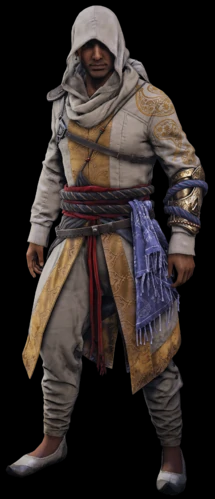

Henry Green
Jayadeep Mir (1843 - 1873), cunoscut sub numele de „Fantoma” și mai frecvent sub numele de Sir Henry Green, a fost un membru născut în India al Frăției Britanice a Asasinilor, cu sediul la Londra, în anii 1860. Fiul lui Arbaaz Mir, un Maestru asasin din Kashmir al Frăției Indiene și al prințesei Pyara Kaur din Imperiul Sikh, Jayadeep a fost nepotul maharajului, Kharak Singh, și strănepotul maharajului Ranjit Singh. El a fost și strănepot și asociat al lui Duleep Singh, ultimul maharaja al Imperiului Sikh, exilat și el la Londra în epoca victoriană. În 1868, Jayadeep a devenit mentor al gemenilor Jacob și Evie Frye, și a ajutat la misiunea de a-l ucide pe Crawford Starrick, Marele Maestru al templierilor britanici.
După o tentativa nereușită a lui Starrick de asasinare asupra reginei Victoria, Jayadeep și gemenii Frye au fost găsți de regină și au devenit membri ai Ordinului Sacrei Jartiere. Mai târziu, Jayadeep s-a căsătorit cu Evie Frye, iar cei doi au emigrat în India.
Ajuns la Londra, Jayadeep a lucrat la prima cale ferată subterană din lume, luând numele de Bharat Singh. I s-a cerut să verifice piatra de mormânt din Biserica Marylebone pentru mesajele și avertismentele lui Ethan. Fără o casă adecvată, Jayadeep și-a stabilit reședința în tunelul Tamisei împreună cu alți cerșetori fără adăpost. Acolo, s-a împrietenit cu ariciul străzii Charlie, cerșetorul Jake și a salvat o femeie în vârstă numită Maggie de atacatorii ei din Biserica Marylebone.
Pe lângă eliminarea criminalilor din tunelul Tamisei, el a servit și ca gardian al tunelului și și-a ajutat personal noii cunoscuți.
În 1862, Jayadeep a ascuns cadavrul lui Robert Waugh, pe care Ethan Frye l-a asasinat, în locul săpăturilor la calea ferată la care lucra pentru a-l observa pe templierul Cavanagh, cunoscut de asasini că folosește construcția pentru a descoperi o bucată de Eden îngropată acolo. Când agentul de poliție Frederick Abberline a venit să investigheze cadavrul, Jayadeep a început să se încurce cu Cavanagh pentru a obține mai multe informații.